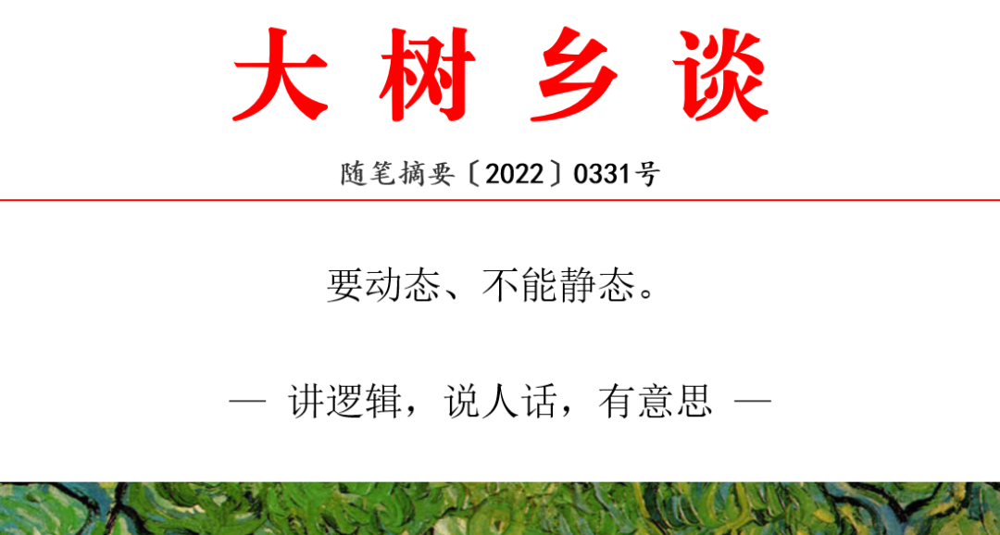

过去经验不能盲从

人往往容易陷入静态思维，典型的就是用过去的经验去推测未来，甚至陷入教条的应用过去经验的困境。 比如今天头条谈中央部委公务员，在晋升、住房、教育等各方面，很多人就陷入了过去的经验困境，一些老人常说现在苦不要紧，坚持十几年、二十年啥都有了。站在他们的角度当然没问题，但是时代变了，如果现在的新入职人员仍然盲目相信他们说的话，那未来可能要狠吃一些苦头。 类似的职业发展、专业选择也是一样。很多家长即使接受过高等教育，但是往往对现代社会教育和职场了解不足，经常选错专业、干错行。
不单单个人，社会治理也一样。比如最近的新冠疫情防控，病毒已经变异了，出现的情况与过去也截然不同，过去能够成功的现在未必，而由于过去的成功，比如精准防控最小限度影响社会运行，可能在未来就比较困难了。 而由于长期习惯了过去的模式，对于应急状态的启用存在犹豫，相关物资、人员、组织准备也没有做好，就容易出现各种混乱。 这些都是需要吸取的经验。 其实个人、组织、地区存在这个问题，国家也一样，比如俄乌冲突，按照德法预计，它们是真的觉得俄罗斯不至于真打，在一月还进行了绥靖式的斡旋，试图在“诺曼底模式”下进行谈判，把美国和北约排除在外。
表面上，普京也确实看似愿意接受《明斯克协议》，暂时和乌克兰停火，似乎一切都在好转。但是德法错误估计了普京的决心，普京有更大的目的，比如构建“新俄罗斯”一举逆转局势。 对我们个人而言，尤其是普通人，能够承担的试错空间非常有限，更要选好方向，当然想要得到靠谱的指导不容易，但人生本来就如此。 我们能做的，就是努力获取尽可能多的信息，尤其克制个人偏好，不要盲从于自己喜欢的信息，更加开放的看待不同的意见，这或许是普通人掌握自身命运的关键途径。 毕竟努力谁都会，但努力的方向未必对。
其他文章推荐
■ 2022年中国房地产政策、房价及个人选择
如果喜欢，还请点赞、“在看”和关注吧 欢迎分享，让更多人发现“大树乡谈”